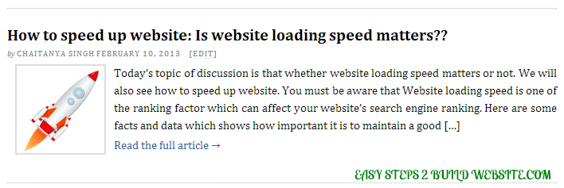
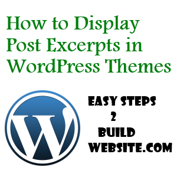

Post excerpt is nothing but a summary of the content with a link to full article. You can customize them as per the need. Before, we share how to add excerpts into your WordPress theme, let’s see how it looks on your blog:
How post excerpts looks like in your WordPress theme?

The above snapshot is being taken from this website’s category page. You can very well see that it has title, post’s thumbnail, excerpt and a “read the full article” link.

What all pages should have the the excerpt?
Generally, home page(or index page), categories, archives and author pages should have the excerpt. There is a reason why these pages should have excerpts rather than full post content, we will discuss them in the excerpt advantages section.
How to add then into your WordPress theme?
If your WordPress theme is by default showing full content on the home, category, archive and author pages then you may choose to replace them with the summary of content(excerpts).
Here is how to do it:
Search for the following code:
<?php the_content(); ?>
Replace it with this one:
<?php the_excerpt(); ?>
Do the above change for index.php (for home page), category.php (for categories), archive.php (for archive pages) and author.php (for author info pages)
Advantages of having post excerpts rather than full post content
1) Gets users attention easily
Excerpt shows the relevant content summary to the users, along with title and thumbnail, which gives user the idea of what the full post is all about. This way user can easily find out the content, in which he/she is interested.
2) Increases traffic and Decreases bounce rate
Suppose, you are having post excerpts being displayed on the category pages. User is looking for some information and he landed to your category page. Since there are several related relevant content summary is being shown on the page, there are chances that he may be interested in more than one and thus he may choose to read more than one of your articles, which definitely adds in the traffic and reduces bounce rate.
3) User-friendly navigation
Navigation becomes easier for index, category and archives pages, once you setup the post excerpts for these pages. Finding out the relevant information is not a tough task if you have setup the post summary for above mentioned pages.
4) Improves webpage loading speed
Consider a scenario wherein you choose to display 10 posts for category and home page. The 10 full posts would add more content to your page rather than summary of 10 posts, page with more content loads slow compared to the page with less content, thus displaying excerpt would boost up the loading speed of website for such pages.
5) Resolves duplicate content issues
Upon displaying full post content instead of summary can cause duplicate content issues, because there are several copies of the same content being found on your website in form these pages.
Disadvantages of displaying posts excerpts
Possible loss of traffic if not handled properly
If the excerpt of a post is not having relevant and enough info then users may not wish to read the full content even though the content is good enough. Solution of such issues is to ensure that the summary is good enough and a meaningful gist of the content. Changing excerpt length and having a read more link for excerpts can also be a better solution for such issues.
Conclusion
Excerpts are good for traffic and it makes the site look professional. There are several other benefits of having them onto your site. So why wait? just setup the above code and take the full advantage of this beautiful feature of WordPress.
The above method of modifying theme’s file is pretty simple and doable, however if you still need any assistance on this, drop a comment below and let me know about the issue, we will try to work it out.
You can also use Auto Limit Posts, a plugin that cuts down posts automatically after a number of letters or in the first paragraph.